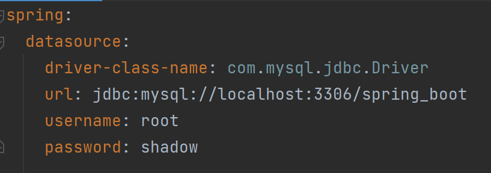
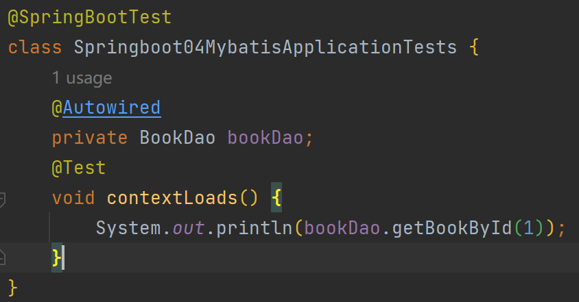
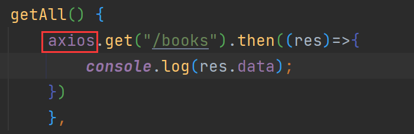
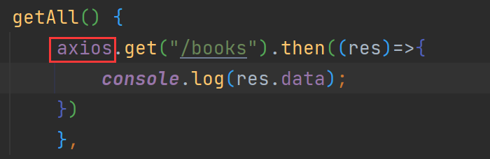
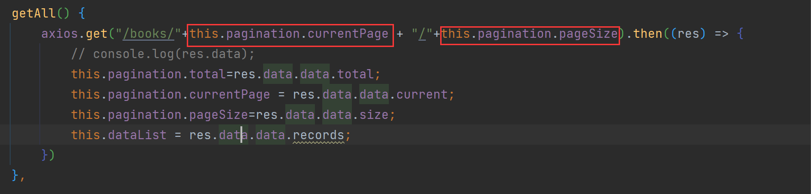

SpringBoot速通
==学习视频：==黑马程序员Springboot教程
一、Springboot基础篇
1.1、Springboot项目的创建
1.idea联网版
- 开发 SpringBoot 程序可以根据向导进行联网快速制作。
- SpringBoot 程序需要基于 JDK8 进行制作。
- SpringBoot 程序中需要使用何种功能通过勾选选择技术。
- 运行 SpringBoot 程序通过运行 Application 程序入口进入。
2.官网版
直接在 Springboot 官网下边的 Quickstart your project 中点击 Spring initializr 并在里边设置 Springboot 的相关细节，然后将生成的项目模块并入整个项目文件中，最后在 IDEA 中导入这个模块。
- 打开 SpringBoot 官网，选择 Quickstart Your Project。
- 创建工程，并保存项目。
- 解压项目，通过 IDE 导入项目。
3.阿里云版
同样是在 IDE 中的 Spring Initializr ，在创建时，选择 Customer 并键入 https://start.aliyun.com
- 选择 Server URL 后面的齿轮
- 输入阿里云 start 地址
- 创建项目。
4.手工制作版
- 创建普通 Maven 工程
- 继承 spring-boot-starter-parent
- 添加依赖 spring-boot-starter-web
- 制作引导类 Application
5.隐藏 IDE 中的文件或文件夹
- Setting -> File Types -> Ignored Files and Folders
- 输入要隐藏的文件名，支持 * 通配符
- 回车确认添加。
1.2、快速上手 SpringBoot
1. Spring 与 SpringBoot 的比较：
- Spring 程序的缺点：
- 依赖配置繁琐
- 配置繁琐
- SpringBoot 程序的优点：
- 起步依赖（简化依赖配置）
- 自动配置（简化常用工程相关配置）
- 辅助功能（内置服务器，……）
2. 入门案例解析
SpringBoot 强大的原因：
- parent：主要是 子pom 文件可以继承 父pom 文件；而且各种jar包的版本都由Boot来调整，不会冲突；通过 pom 文件内的 \
- starter：在 \
- 实际开发：
- 使用任意坐标时，仅书写 GAV 中的 G 和 A，V由 SpringBoot 提供，除非 SpringBoot 未提供对应版本V。
- 如发生坐标错误，在指定 Version（要小心版本冲突）。
- 实际开发：
- 引导类：以 Application 结尾的类。类中的
SpringApplication.run(Application.class, args);起检测上下文中的 Bean。 引导类是 Boot 工程的执行入口，运行 main 方法就可以启动项目；工程运行后初始化 Spring 容器，扫描引导类所在包加载 Bean。 - 内嵌tomcat：使用 Maven 依赖管理变更起步依赖项：可以使用 \
- tomcat（默认）：apache 出品，粉丝多，应用面广，负载了若干较重的组件。
- jetty：更轻量级，负载性能远不如 tomcat。
- undertow：负载性能勉强跑赢tomcat。
1.3、REST开发
REST：（Representational State Transfer），表现形式状态转换。即访问网络资源的格式。
按照 REST 风格访问资源时使用 行为动作 区分对资源的操作。

根据 REST 风格对资源进行访问称为：RESTful
- 设定 http 请求动作
- 设定请求参数（路径变量）
REST 重要的注解
- \@RequestMapping
- 类型：方法注解
- 位置：SpringMVC控制器方法定义上方
- 设置当前控制器方法请求访问路径
- 属性：
- value（默认）：请求访问路径
- method：http 请求动作，标准动作（GET/POST/PUT/DELETE）
- \@PathVariable
- 类型：形参注解
- 位置：SpringMVC控制器方法形参定义前面
- 作用：绑定路径参数与处理器方法形参间的关系，要求路径参数名与形参名一一对应。
三种传参注解对比
\@RequestBody \@RequestParam \@PathVariable
- 区别：
- \@RequestBody 用于接收 json 数据
- \@RequestParam 用于接收 url 地址传参或表单传参
- \@PathVariable 用于接收路径参数，使用 {参数名称} 描述路径参数
- 应用：
- 后期开发中，发送请求参数超过1个时，以 json 格式为主，\@RequestBody 应用较广。
- 如果发送非 json 格式数据，选用 \@RequestParam 接受请求参数。
- 采用 RESTful 进行开发，当参数数量较少时，例如 1 个，可以采用 \@PathVariable 接受请求路径变量，通常用于传递 id 值。
REST快速开发的注解
在快速开发中， \@RequestMapping 可以替换，按照 method 的不同，有下面几个：
- \@RestController
- 类型：类注解
- 位置：基于SpringMVC的 RESTful 开发控制器类定义上方
- 作用：设置当前控制器类为 RESTful 风格，等同于 \@Controller 与 \@ResponseBody 两个注解组合功能
- 属性：
- value（默认）：请求访问路径
- \@GetMapping
- \@PostMapping
- \@PutMapping
- \@DeleteMapping
1.4、SpringBoot基础配置
1.复制工程（简化创建模块的步骤，P16）
- 原则：
- 保留工程基础结构
- 抹掉原始工程痕迹
- 步骤：
- 在工作空间中复制对应工程，并修改工程名称
- 删除与 IDEA 相关配置文件，仅保留
src目录与pom.xml文件 - 修改
pom.xml文件中的artifactId与新工程/模块名相同 - 删除
name标签（可选） - 保留备份工程供后期使用。
2.属性配置
- 修改服务器端口
- SpringBoot 默认配置文件位于
resources文件下的application.properties中，通过键值对配置对应属性。 - 修改服务端口：直接在文件中写入键值对即可。
- SpringBoot 默认配置文件位于
- 关闭运行日志图标：
spring.main.banner-mode=off - 设置日志相关：
logging.level.root=debug
以上这些可以在 application.properties 中配置的所有选项都包含在 Common Application Properties 库中，可以在其中查找相关信息。除此之外， application.properties 中配置的东西与 starter 关系紧密，必须包含相应的 starter 才能进行配置。书写 SpringBoot 配置采用 关键字+提示 形式书写，不需要背。配置文件的一般格式为：
3.属性配置的方式
- application.properties 格式：
server.port=80 - application.yml 格式：
- application.yaml 格式：
上述三种方式中，.yml 格式为主流格式 。 而 .properties 格式为默认格式。三种方式共存时， 不同配置文件中相同配置按加载优先级为： .properties > .yml > .yaml 互相覆盖，不同配置文件中不同配置全部保留。
4.自动提示功能消失的解决方案
在 Project Structure 中的 Facets 按如下序号操作：
5.yaml 数据格式
yaml：（YAML Ain’t Markup Language），一种数据序列化格式
- 优点：
- 容易阅读
- 容易与脚本语言交互
- 以数据为核心、重数据轻格式
- YAML 文件扩展名：
.yml主流.yaml
- 语法规则：
- 大小写敏感
- 属性层级关系使用多行描述，每行结尾使用冒号结束
- 使用缩进表示层级关系，同层级左侧对齐，只允许使用空格（不允许使用 Tab 键）
- 属性值前面添加空格（属性名与属性值之间使用冒号+空格作为分隔）
#表示注释
- 核心规则： 数据前面要加空格与冒号隔开。
- 字面值表示方式：
- 数组表示方式：
6.读取 yaml 中单一属性的数据
- 使用 \@Value 配合 SpEL 读取单个数据
- 如果数据存在多层级，依次书写层级名称即可
- yaml 文件中变量的引用：
- 在配置文件中可以使用 ${属性名} 方式引用属性值
- 如果属性中出现特殊字符，可以使用双引号包裹起来作为字符解析。
7.读取 yaml 中的全部数据
- 使用 Environment 对象封装全部配置信息
- 使用 \@Autowired 自动装配数据到 Environment 对象中
1 | //伪代码 |
8.读取yaml 文件中引用类型属性数据
最常用的读取 yaml 文件中数据的方法
- 定义数据模型封装yaml文件中对应的数据
- 定义为 Spring 管控的 bean
- 指定加载的数据
1.5、整合第三方技术
1.整合 JUnit
JUnit： 一个java语言单元测试框架，这个框架最重要的就是 \@SpringBootTest 这个注解：
- \@SpringBootTest
- 名称：测试类注解
- 位置：测试类定义上方
- 作用：设置 JUnit 加载的 SpringBoot 启动类
- 步骤：
- 导入测试对应的 starter
- 测试类使用 \@SpringBootTest 修饰
- 使用自动装配的形式添加要测试的对象
- classes 属性：
- 作用：精准的指定配置类或者引导类所在的位置，如果不指定，仅能在所在包或副包中找配置类或引导类；如果指定，则可跨包寻找。
- 示例：
@SpringBootTest(classes=SpringBoot03JUnitApplication.class) - 用途：
- 测试类如果存在于引导类所在的包或者子包中，无需指定引导类
- 测试类如果不存在于引导类的包或子包中，需要通过
classes属性指定引导类。
2.整合 MyBatis
MyBatis： 一个开源、轻量级的数据持久化框架，是 JDBC 和 Hibernate 的替代方案。
- 所需基础：
- 核心配置：数据库连接相关信息（连什么？连谁？什么权限？）
- 映射配置：SQL映射（XML/注解）
- 步骤：
- 选择当前模块需要使用的技术集：（MyBatis、MySQL）【整合技术，导入对应的坐标】
- 设置数据源参数：（在
.yml配置文件中），关键词为datasource - 定义数据接口与映射配置：
- 测试类中注入
dao接口，测试功能：
- 常见问题：
- MySQL 8.X 驱动器强制要求设置时区
- 修改url，添加
serverTimezone设定 - 修改 MySQL 数据库配置
url: jdbc:mysql://localhost:3306/spring_boot?serverTimezone=UTC
- 修改url，添加
- 驱动类过时时，提醒更换为
com.mysql.cj.jdbc.Driver
- MySQL 8.X 驱动器强制要求设置时区
3.整合 MyBatis-Plus
- 与 MyBatis 区别：
- 导入坐标不同
- 数据层实现简化
- 步骤：
- 手动添加 SpringBoot 整合 MyBatis-Plus 的坐标，可以通过 mvnrepository 获取。
- 定义数据层接口与映射配置，继承
BaseMapper
4.整合 Druid
Druid: Apache Druid是一个实时分析型数据库，旨在对大型数据集进行快速的查询分析。
- 指定数据源类型的两种方式：
- 常规的方法：
- 步骤：
- 整合 Druid 要导入 Druid 对应的 starter
- 根据 Druid 提供的配置方式进行配置
- 整合第三方技术通用方式：
- 导入对应的 starter
- 根据提供的配置格式，配置非默认值对应的配置项
1.6、SSMP 整合案例
1.整合案例分析
案例的实现方案：
- 实体类开发——使用 LomBok 快速制作实体类
- Dao 开发——整合 MyBatis-Plus，制作数据层测试类
- Service 开发——基于 MyBatis-plus 进行增量开发，制作业务层测试类
- Controller 开发——基于 RESTful 开发，使用 PostMan 测试接口功能
- Controller 开发——前后端开发协议制作
- 页面开发——基于 VUE+ElementUI 制作，前后端联调，页面数据处理，页面消息处理
- 列表、新增、修改、删除、分页、查询
- 项目异常处理
- 按条件查询——页面功能调整，Controller 修正功能，Service 修正功能
2.模块创建
- 勾选 SpringMVC 与MySQL 坐标
- 在
pom.xml文件中导入MyBatis plus与Druid坐标 - 修改配置文件为
.yml格式，并设置端口号为80
3.实体类快速开发（LomBok）
LomBok： 一个 Java 类库，提供了一组注解，简化 POJO 实体类开发。
- 导入 LomBok 依赖：
- 可以为当前实体类设置对应的 get/set 方法， toString 方法，hashCode 方法，equals 方法。
4.数据层标准开发（CURD）
- 步骤：
- 手工导入 starter 坐标（两个：MyBatis plus；Druid）
- 配置数据源与 MyBatis Plus 对应的配置
- 开发 Dao 接口（继承 BaseMapper）
- 制作测试类测试 Dao 功能是否有效
- 具体操作：
- 导入 MyBatis Plus 与 Druid 对应的 starter：
- 配置数据源与 MyBatis Plus 对应的基础配置（id生成册罗使用数据库自增策略）：
- Dao 接口：
5.开启 MP 运行日志
- 为方便调试可以开启 MyBatis Plus 的日志：在 pom 文件中配置
- 实现结果： 上线运行时，不可以开 日志功能
6.数据层开发——分页
MyBatis Plus拦截器： 对 SQL 语句进行拦截，然后修改达到不同的效果
- 分页操作需要设定分页对象
IPage - IPage 对象中封装了分页操作中的所有数据
- 数据、当前页码值、每页数据总量、最大页码值、数据总量
- 分页操作实在 MyBatis Plus 的常规操作基础上得到的，内部是动态的拼写 SQL 语句，因此需要增强对应的功能，使用 MyBatisPlus 拦截器实现。
7.数据层开发——条件查询功能
这个有两种方法：
- 使用 QueryWrapper 对象封装查询条件：
- 使用 LambdaQueryWrapper 对象封装查询条件：推荐使用
8.业务层标准开发（基础CURD）
业务层开发： service 层接口定义与数据层接口定义有很大差别，一般业务层更注重接口名，而数据层更注重对数据库的操作。
- 步骤：
- 接口定义：注意返回值类型
- 实现类定义：业务层注重逻辑规则，将接口定义为操作状态，所以在这里需要写
>0 - 测试类定义：
- 注意点：
- Service 接口名称定义为业务名称，并与 Dao 接口名称进行区分。
- 制作测试类测试 Service 功能是否有效。
9.业务层快速开发——基于MyBatisPlus创建
在 IDEA 中，可以用 CTRL+F12 查看该类中所有的方法，包括继承的方法。- 快速开发方案：
- 使用 MyBatisPlus 提供有业务层通用接口（IService\
- 在通用类基础上做功能重载或功能追加
- 注意重载时不要覆盖原始操作，避免原始提供的功能丢失。
- 使用 MyBatisPlus 提供有业务层通用接口（IService\
- 主要步骤：
- 接口定义：继承
IService<>注意加入实体类范型。这里是Book - 如果所需的功能在继承中没有，可以再手动添加：
- 实现类定义：需要继承
ServiceImpl<>，并且里面包含两个参数。
此外，实现类需实现接口类定义的其他功能。
- 接口定义：继承
10.表现层标准开发
- 分析
- 基于 RESTful 进行表现层接口开发
- 使用 Postman 测试表现层接口功能
- 步骤：
- 表现层类开发：
- 基于 RESTful 制作表现层接口
- 新增：POST、删除：DELETE、修改：PUT、查询：GET
- 接收参数：
- 实体参数：\@RequestBody
- 路径变量：\@PathVariable
11.表现层数据一致性处理（R对象）
如果不进行一致性处理，则前端拿到的数据格式将五花八门，这里，使用 R对象方法进行一致性处理。R 对象： 设计表现层返回结果的模型类，用于后端与前端进行数据格式统一。 也成为 前后端数据协议。
- 写 R 对象：
- 表现层接口统一返回值类型结果：
12.前后端调用（axios 发送异步请求）
本节及后续几节都在 book.html 中进行操作，需要掌握 WEB 相关知识。- 前后端协议联调：
- 前后端分离结构设计中页面归属前端服务器
- 单体工程中页面放置在 resources 目录下的 static 目录中（建议执行 clean）
- 在 static/pages/book.html 中实现
getAll()方法：- 前端发送异步请求，调用后端接口：
axios 调用请求方法(get/post/put等)。括号里是针对的目标，then后跟需要进行的操作。
- 前端发送异步请求，调用后端接口：
- created 钩子函数用于初始化页面时发起调用。
- 页面使用 axios 发送异步请求获取数据后确认前后端是否联通。
13.数据处理——列表功能
主要将数据库中的数据显示在 book.html 页面中。将查询数据返回到页面，利用前端数据双向绑定进行数据展示。
关键代码： this.dataList=res.data.data 。
14.添加功能
可以在 book.html 中观察源代码与页面之间的关系，找到加入功能按钮对应的参数名，然后在下边寻找该参数名写入功能。
- 弹出添加窗口：
- 清除数据：
- 添加功能：
- 取消添加：页面中的取消键。
- 步骤：
- 请求方式使用 POST 调用后台对应操作
- 添加操作结束后动态刷新页面加载数据
- 根据操作结构不同，显示对应的提示信息
- 弹窗时加 Div 时清除表单数据
15.删除功能
- 步骤：
- 请求方式使用 delete 调用后台对应操作
- 删除操作需要传递当前行数据对应的 id 值到后台
- 删除操作结束后动态刷新页面加载数据
- 根据操作结果不同，显示对应的提示信息
- 删除操作前弹出提示框避免误操作
- 删除功能：
this.$confirm("提示信息","提示名",{type:'提示类型'}.then)为避免误操作的提示框。
16.修改功能（加载数据）
- 弹出修改窗口：
- 加载要修改数据通过传递当前行数据对应的 id 值到后台查询数据
- 利用前端数据双向绑定将查询到的数据进行回显
- 修改功能：
- 为了在点击 取消之后，窗口能够关闭，在
cancel()中加入this.dialogFormVisible4Edit = false;- 请求方式用 PUT 调用后台对应操作
- 修改操作结束后动态刷新页面加载数据（同新增）
- 根据操作结果不同，显示对应的提示信息（同新增）
17.异常消息处理
当项目异常时，后台得到的数据格式与正常时不一样，此时需要统一格式。
- 步骤：
- 使用注解 \@RestControllerAdvice 定义 SpringMVC 异常处理器用来处理异常。
- 异常处理器必须被扫描加载，否则无法生效
- 表现层返回结果的模型类中添加消息属性用来传递消息到页面。
- 详细代码
- 对异常进行统一处理，出现异常后，返回指定信息：
- 在 R 类中新增构造方法：

- 可以在表现层 Controller 中进行消息统一处理：
- 页面消息处理：
18.分页
- 步骤：
- 使用 el 分页组件
- 定义分页组件绑定的数据类型
- 异步调用获取分页数据
- 分页数据页面回显
- 具体代码：
- 分页功能：
- 切换页码：
- 上面的
pagination等具体参数需要参考page.html中的参数。
19.分页功能维护（删除 BUG）
对查询结果进行校验，如果当前页面值大于最大页面值，那么重新执行查询操作，使用最大页面值作为当前页面值：
20.条件查询
- 查询条件数据封装
- 单独封装
- 与分页操作混合封装
- 页面数据模型绑定：
- 组织数据成为 get 请求发送数据：
- Controller 接收参数：
- 条件查询功能：
二、运维实用篇
1、工程打包与运行
- 对 SpringBoot 项目打包（执行 Maven 构建指令 package）
mvn package - 运行项目（执行启动指令）
java -jar springboot.jar【注】：jar 支持命令启动需要依赖 maven 插件支持，请确认打包时是否具有 SpringBoot 对应的 maven 插件。 - 总结：
- SpringBoot 工程可以基于 java 环境独立运行 jar 文件启动服务
- SpringBoot 工程执行 mvn命令 package 进行打包
- 执行 jar 命令：
java -jar 工程名.jar
2、命令行启动常见问题及解决方案
- Windows端口被占用
- 查询端口：
netstat -ano - 查询指定端口：
netstat -ano|findstr "端口号" - 根据进程 PID 查询进程名称：
tasklist |findstr "进程 PID 号" - 根据 PID 杀死任务：
taskkill /F /PID "进程PID号" - 根据进程名称杀死任务：
taskkill -f -t -im "进程名称"
- 查询端口：
3.配置文件分类
- SpringBoot 中4级配置文件
- 1级： file : config/application.yml 最高
- 2级： file: application.yml
- 3级： classpath: config/application.yml
- 4级： classpath: application.yml 最低
- 作用：
- 1级与2级留做系统打包后设置通用属性，1级常用于运维经理进行线上整体项目部署方案调控
- 3级与4级用于系统开发阶段设置通用属性，3级常用于项目经理进行整体项目属性调控。
- 配置文件分为四种：
- 多层级配置文件的属性采用叠加并覆盖的形式作用域程序。